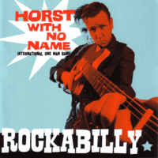

Horst With No Name - Rockabilly (Album, 2013)
01 - Rockabilly (0:48)
02 - Rockabilly Baby (2:07)
03 - She Breaks Me Down (3:18)
04 - Mustang (2:25)
05 - Please Don't Leave Me (3:06)
06 - Rockabilly Stomp (0:42)
07 - Lonely (2:33)
08 - Don't Drink And Surf (2:13)
09 - Sick And Tired (2:48)
10 - Coming Home (3:13)
11 - Power Of Soul (2:13)
12 - Wild Rockabilly (0:22)
13 - Nancy (2:04)
14 - Wrong Side (3:31)
15 - Change The World (1:50)
16 - Born To Rock (3:11)
17 - Teddyboy Rockabilly (3:06)
© Part Records :: [6103.002]
Notes
Review
172/366 (Project 366)
One man band with high energy enthusiasm. Shapes of Rockabilly and Garage Rock with really somewhat rollin' and heavy tunes. Some tracks are fancy demos. Rather mad and experimental sound! Mostly album with variety of moods, however practically always - raw, greasy, simple and sometimes catchy!